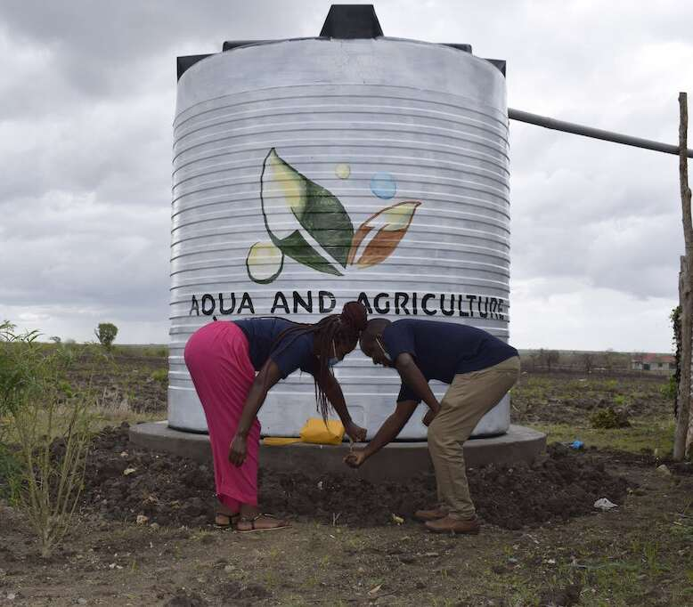
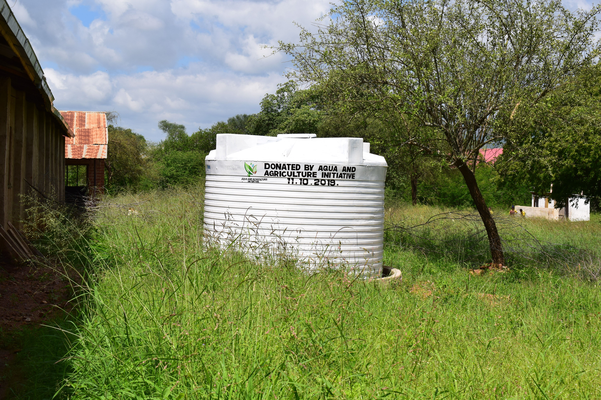
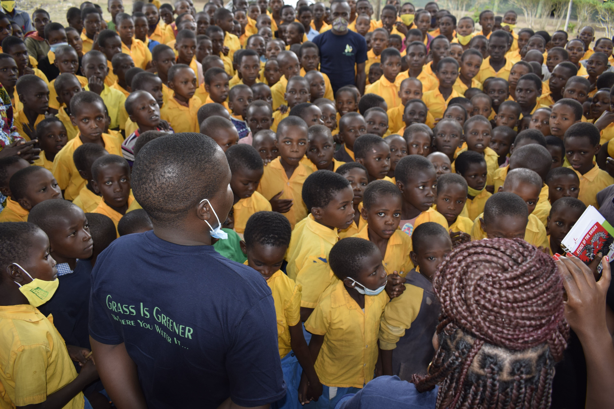
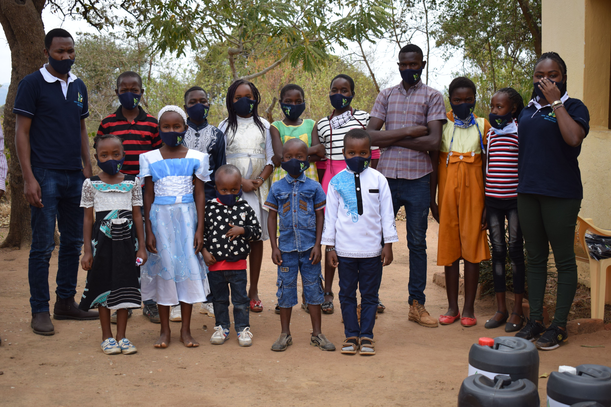

What Drives Us
Since 2017, we have focused on improving the well-being of people in arid and semi-arid areas. These regions suffer successive water shortages, forcing residents and school children to walk for hours searching for water.
Learn MoreBringing clean water, sustainable agriculture, and hope to arid communities across Kenya since 2017.
Lives Impacted
Major Projects
Years of Service
Counties Served
Your generosity brings sustainable water solutions to communities in Kenya's driest regions.
Learn More →Join our team on the ground and make a hands-on impact in water-scarce communities.
Learn More →Partner with us to fund long-term water and agriculture projects across three counties.
Learn More →
Aqua & Agriculture Initiative is a non-profit organization started in 2017 with the aim of enhancing the well-being of individuals in arid and semi-arid regions of Kenya. We work in Kitui, Makueni, and Kilifi counties.
We support communities experiencing water scarcity, where children walk hours daily just to find water. By joining hands with us, you play a significant role in granting these communities reliable water access and a brighter future.
People Helped
Projects Done
Years Active
Team Members
Real stories of transformation from the communities we serve

In 2017, we identified the dire need for clean water at Mulenyu Primary School, where pupils walked over 2 hours to reach the seasonal Mutongwe River.

Located in Magarini sub-county, Kilifi County — one of the driest regions. The schools shared water from broken 20,000-liter tanks.

When the pandemic hit, communities already facing drought and famine were worst affected. Aqua A.I stepped in with critical support.
Since 2017, we have focused on improving the well-being of people in arid and semi-arid areas. These regions suffer successive water shortages, forcing residents and school children to walk for hours searching for water.
Learn MoreImprove access to clean and sustainable water sources for daily needs and agriculture.
Promote climate-smart practices that enhance food security and farming resilience.
Protect ecosystems, promote afforestation, and combat desertification in ASAL regions.